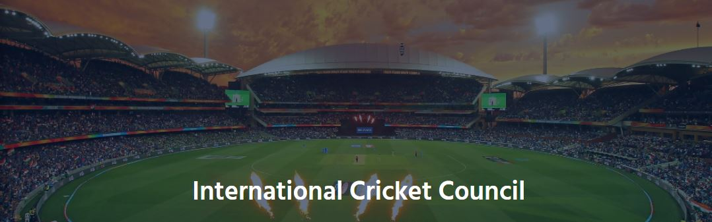

Introduction
The ICC is the global governing body for cricket. Representing 106 members, the ICC governs and administrates the game and works with our members to grow the sport. The ICC is also responsible for the staging of all ICC Events.
The ICC presides over the ICC Code of Conduct, playing conditions, the Decision Review System and other ICC regulations. The ICC also appoints all match officials that officiate at all sanctioned international matches. Through the Anti-Corruption Unit it coordinates action against corruption and match fixing.